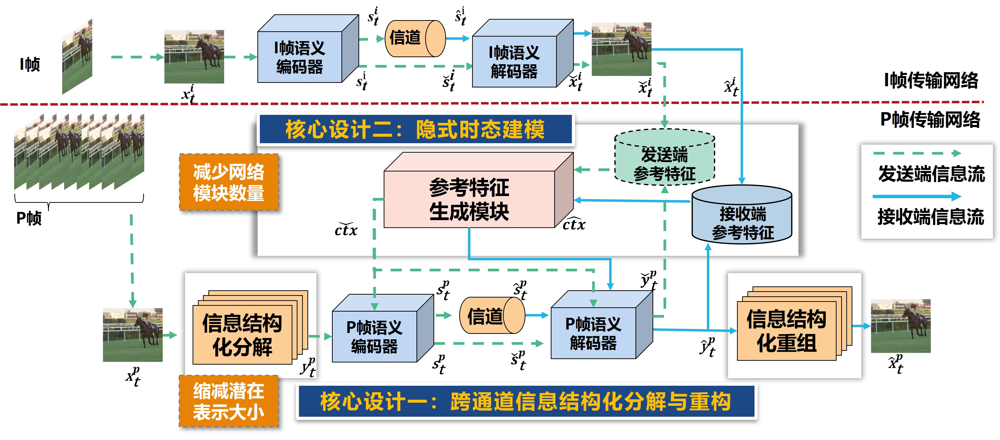
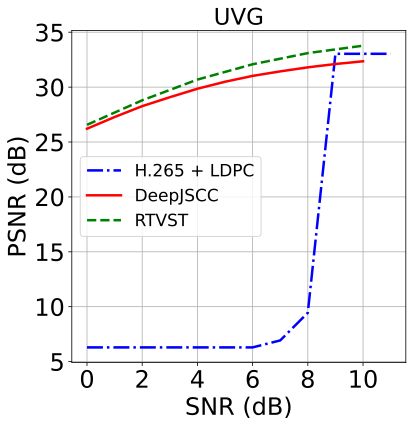

实时视频语义传输算法设计
团队：第一梯队
算法简介：
语义通信作为6G关键技术，以其高压缩与强鲁棒性在图像、视频传输中展现出显著优势。语义通信通过提取并传输图像的语义特征实现了极高的压缩增益。同时，其以任务为导向的特性使得系统对底层传输错误鲁棒，只要语义信息得以保留，接收端便能稳健地恢复出可用图像，从而在低带宽与高噪声信道下展现出卓越的鲁棒性。然而，在具身智能、XR、自动驾驶等对实时性与可靠性要求极高的业务场景中，现有语义视频传输模型如DeepWiVe、DVST等，虽在保真度上优于H.265/LDPC等传统分离式编码方案，却因模型结构复杂、计算复杂度高，导致推理速度缓慢，时延问题突出，使其在时延敏感的应用中难以发挥实际价值。
为改善这一状况，SCCVS、SCSC等方法通过模块轻量化设计，在一定程度上提升了模型推理速度，但这些轻量化方法注重于减少计算复杂度，仍不足以满足未来通信的实时性需求。经调查研究发现，推理速度主要受操作复杂度制约，操作复杂度又由潜在表示维度与网络模块数量共同决定。目前，大多数优化工作聚焦于降低计算复杂度，而针对如何降低操作复杂度的研究仍相对欠缺。
针对上述问题，本团队提出了一种实时视频语义传输系统（Real-time Video Semantic Transmission, RTVST）。该系统通过设计隐式时间建模模块，将传统运动估计与残差链路融合为统一的前向过程，在有效节省带宽资源的同时，显著减少了网络模块数量。同时，通过利用跨通道信息结构化分解与重组模块将视频帧转换至紧致特征空间，在紧致语义空间中执行特征提取，RTVST进一步压缩了潜在特征维度，从而大幅降低了操作复杂度，显著提升了单帧编解码效率。此外，通过端到端的联合优化，该算法在保证高质量重建性能的同时，展现出优异的噪声鲁棒性。实验表明，RTVST模型支持帧率相比现有语义方案DeepJSCC提升7倍，同时具有优秀的重建效果与感知质量、良好噪声鲁棒性。
RTVST模型架构图

性能指标对比曲线

PSNR性能对比

SSIM性能对比

LPIPS性能对比
编解码视频展示
CBR:
0.012
Origin
帧率:25 FPS
H.265 + LDPC
帧率:25 FPS
DeepJSCC
帧率:4 FPS
RTVST
帧率:25 FPS